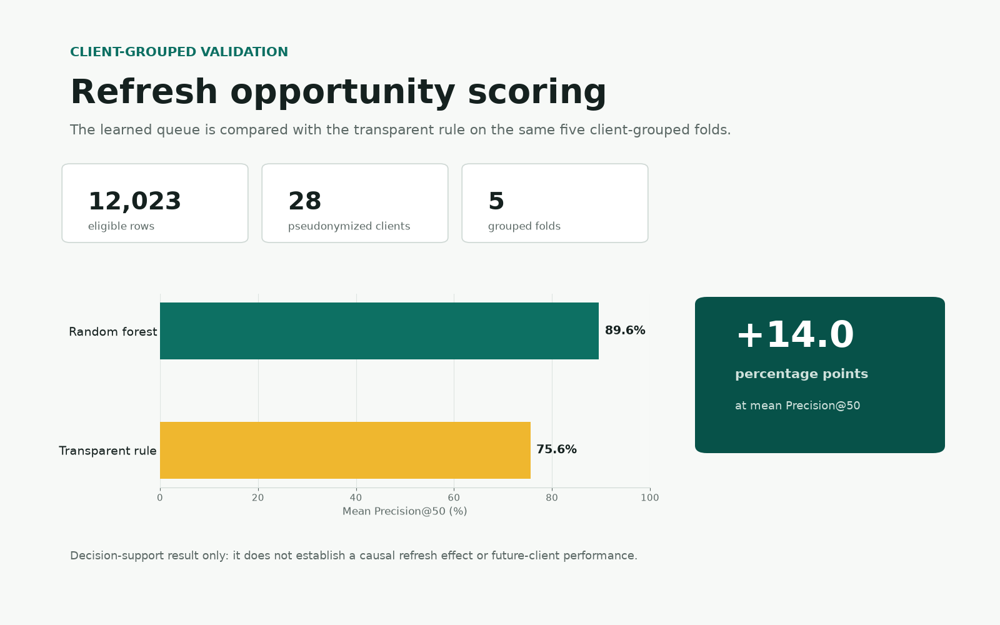

Three connected pieces show how I framed the decision, built a
readable ranking system, and checked that the answer did not leak
into the features.

01 / Featured case
Refresh Opportunity Scoring
A ranked queue helps a content reviewer decide which existing
pages to inspect first. The model supports editorial review; it
does not automate publishing.
Decision
Which pages deserve review first?
Method
Rule baseline, five client-grouped folds, readable models
I translated an open-ended capstone idea into a page-level
ranking task: prioritize limited reviewer attention and judge
the top of the queue with Precision@50.
Identifiers stay context, target-derived columns stay out, and
clients stay separated across train and validation. The goal is
an honest queue, not a suspiciously perfect score.
I am a BS Data Science student at Air University and a machine
learning intern focused on search intelligence, practical ranking,
and careful validation.
My working pattern is simple: define the decision, build a small
baseline, check timing and leakage, compare honestly, then explain
what the result can and cannot support.